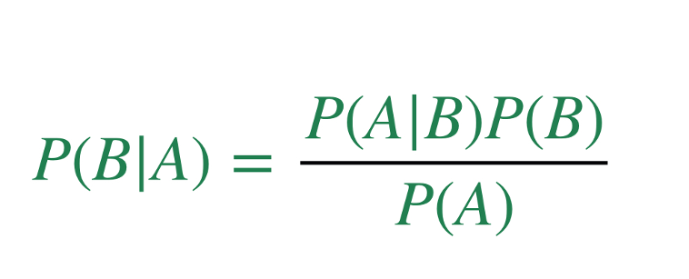

Conditional probability is just the probability of some event B given what we know about some other event A. We write that using a vertical line, as P(B | A), which means probability of B given A. For example, what's the probability of Morgan's having been on law review, given that they are clerking for D.C. Circuit judge Sri Srinivasan (a well-known "feeder" judge and frequent shortlister for SCOTUS).
Sometimes, of course, A and B are independent. For example, suppose we asked "what's the probability of Morgan's having been on law review, given that they're a vegetarian?" Someone's preferred diet probably has nothing to do with whether they do law review, so in that case, the conditional probability of law review is just the same as the underlying overall probability of Morgan's having been on law review (what we call the prior).
However, conditional probability is important when the underlying probabilities are not independent, as in our law review/clerking for Judge Srinivasan example. Judge Srinivasan probably (I don't actually know, assuming here) prefers to hire clerks who have been on law review. What that means is that knowing someone is clerking for Judge Srinivasan gives us information about whether or not they were on law review.
Conditional probability math is how we figure out how much some new information is worth. In probability terms, we update our prior. That is, suppose we know that 10% of all law graduates were on law review. Then our prior, or P(Was-On-Law-Review) is 0.1. Calculating P(Was-On-Law-Review | Clerking-For-Judge-Srinivasan) is how we update our prior to get a posterior probability that incorporates our new information about the fancy clerkship that Morgan got. So how do we do it?
This is Bayes Rule (I've never figured out if it takes an apostrophe at the end):
Fundamentally, the place where Bayes Rule is useful is in reversing conditional probabilities. That is, suppose you see me drinking a bunch of coffee before class, and you want to know how likely it is that I'll make it to teach my morning class on time. (Maybe you are in that class and you are interested in slacking off a little if I will be late.) You're trying to figure out P(Class-On-Time | Gowder-Caffeinated).
Here's one mistake you might make. You may think to yourself: "I can pretty reliably tell whether or not Gowder has had a bunch of coffee based on how he teaches on any given day. In the last 10 days he's been in class on time, 9 of those times he was really hyper, so let's say 90% of the time when class is on time Gowder had caffine. He's having caffeine, so there's a 90% chance class starts on time." That reasoning, while tempting, is wrong. (For a real-life example of this mistake, see this explanation of how a researcher made erroneous claims about police misconduct by race)
Formally speaking, note that the information you have is how likely it is that I had coffee, given that I was teaching class on time. In symbols, P(Gowder-Caffeinated | Class-On-Time). But that is not the same as what you want to know, which is P(Class-On-Time | Gowder-Caffeinated)! In other words, P(A | B) is not the same as P(B | A)!!
Instead, you need to get more information to plug into the formula to get the right answer. In particular, you also need to know the overall probability that I drink coffee on a given day (in other words, in 100 or however many teaching days, how many times will I have coffee beforehand)---in our formula, that corresponds to P(A). You'll also want to know the overall probability that I start class on time, which is P(B). Then you can plug numbers into the formula to get an answer. (If you want to go deeper, you can watch this video which is a really nice Bayes Rule explainer. But if you think you understand up to this point, try the following exercise, and then look at the video after you're done.)
Imagine you're a criminal defense lawyer, and your client was stopped at a random DUI checkpoint and made to blow into a tube. The device registered a positive result, associated with the claim that your client was drunk (alcohol level beyond the legal limit). That’s all the evidence the state has about your client. (I recognize that this is artificial---typically there would be some other evidence of intocation. But work with me here.)
The state also introduces some evidence about the accuracy of the breath test used at the checkpoint. To be specific, the state introduces scientific studies conducted to validate the testing device. The device was validated by asking a large number of sober people (say 10,000) to blow into it, and also a similar large number of clearly very drunk people. (Again, I'd like you to suspend disbelief on this validation process and assume the identification of the drunk people for the validation study was completely reliable, that there's no difference between very very drunk and just a little over the limit, etc.)
The state's validation study showed that the device got 95% of the people right in each category. That is: among the 10,000 sober people, the device correctly returned a negative result for 9,500 of them (and incorrectly returned a positive result for 500). Similarly, among the 10,000 drunk people, the device correctly returned a positiver result for 9,500 of them (and incorrectly returned a negative result for 500). On the basis of this evidence and no other, the state will offer the testimony of an expert witness who will claim that the device is "95% accurate."
The police officer who stopped your client and administered the breath test, and the expert witness who will testify about the validation study of the testing device, are the only witnesses the state will have available to testify. For your part, you have only one witness: an expert who will testify that, on average, on the day of the week and time that your client was stopped, in that area your client was stopped, 2% of people are drunk beyond the legal limit.
The state's validation test has given you evidence about P(Blew-Positive | Drunk)---that's 0.95. But what you really want is P(Drunk | Blew-Positive), because that's what the jury has to draw conclusions about to convict your client. You also have the prior, P(Drunk), which is 0.02---your task is to figure out how to update that prior given the new information that your client blew positive.
One thing that I didn't hand you above is P(Blew-Positive), which is the denominator of our Bayes Rule equation for this problem. But you can easily calculate it. A trick to do so is to to realize that there are only two ways to blow a positive result, and they are mutually exclusive: you can blow a positive result if you're drunk, and you can blow a positive result if you're sober. And so you can just add those two states of affairs together.
That is, 2% of the time, someone will be drunk, and 95% of the time under those circumstances, they'll blow a positive result. 0.95 times 0.02 is 0.019. 98% of the time, someone will be sober, and 5% of the time, they'll get a positive result. That product is 0.049. And then 0.019 + 0.049 = 0.068. In other words, if we have no idea whether they're drunk or sober, we'd expect just under 7% of people who are randomly stopped to blow a positive result on our test.
From there, you can just plug into Bayes Rule. You'll get a surprising result: it turns out that P(Drunk | Blew-Positive) is only 0.28. WTF? I thought the device was 95% accurate?!
The trick is that "accuracy" is an ambiguous weasel word. (The first ten or 11 minutes of this video explains the confusing language surrounding this type of problem really well. The rest I wouldn't worry about too much.) When the dishonest (or clueless) expert witness went on about 95% accurate, that figure didn't take the base rate (the prior) into account. But even if a test has a really tiny rate of making errors, if there are very very few cases where the test ought to be positive in the population (if there's a tiny prior), it's still likely that the false positives will swamp the true positives in the data we actually see.
Here's another way to think about it. Suppose the below represents 100 people stopped by the DUI checkpoint:
x x x x x x x x x x
x x x x x x x x x x
x x x x x x x x x x
x x x x x x x x x x
x x x x x x x x x x
x x x x x x x x x x
x x x x x x x x x x
x x x x x x x x x x
x x x x x x x x x x
x x x x x x x x O O
All the Xes are sober and all the Os are drunk. Reflecting the 2% rate of drunkenness in the population, there are two Os.
Among the 2 drunk people, 95% of the time, the breath test will indicate positive. That comes out to 1.9 people, but we'll round it up to 2.
Among the 98 sober people, 95% of the time, the breath test will indicate negative. That is, 93.1 (which we'll just round to 93). But that means there are 5 people who will be sober, but the breathalyzer will indicate as negative.
x x x x x x x x x x
x x x x x x x x x x
x x x x x x x x x x
x x x x x x x x x x
x x x x x x x x x x
x x x x x x x x x x
x x x x x x x x x x
x x x x x x x x x x
x x x x x x x x x x
x x x x x x x x O O
Observe that over twice as many sober people are misidentified as drunk, as accurately identified drunk people. More importantly, that red area is the probability we care about. When we ask what the probability of actually being drunk is, conditional on blowing a positive result on the test, the red zone represents the condition, that is, the whole universe of cases where someone blew positive. Within that condition we can see that the probability of someone being drunk is 2/7, or about .286. (This is slightly different than the nnumber we get from applying Bayes rule directly because we rounded to get the 2 and the 7.) That's the meaning of conditional probability.
please run lein figwheel in order to start the compiler